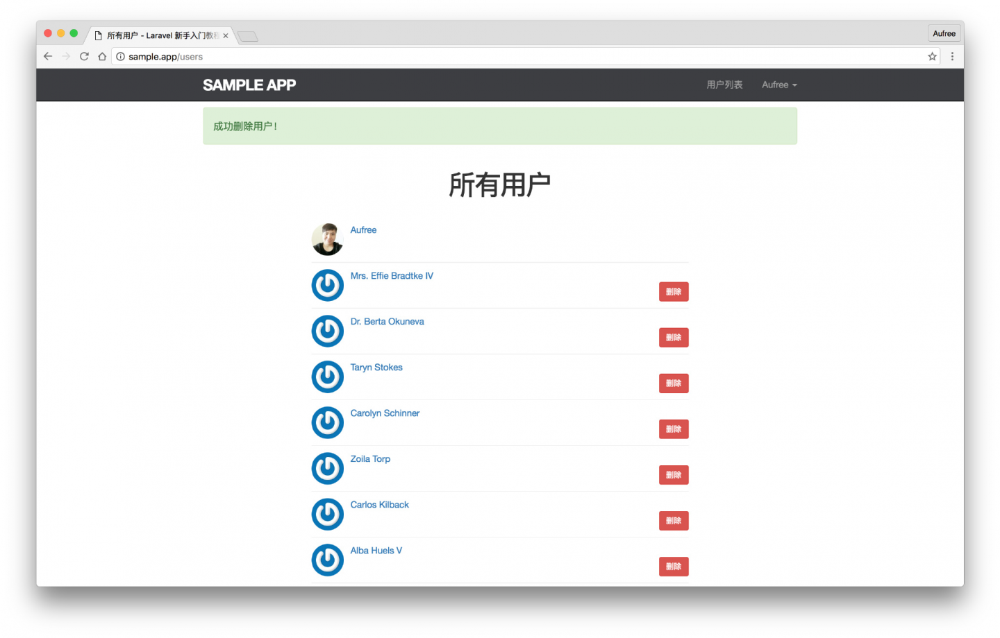

8.5. 删除用户
删除用户
接下来我们要完成删除用户的功能，用户的删除只能通过管理员来操作，因此我们接下来需要为用户表加上管理员字段，以便用来判定该用户是否为管理员。然后将管理员身份授权给某个指定用户，让其得到删除用户的权限。最后我还需要在用户列表页面加上删除按钮，只有当我们登录管理员账号时才能看到删除按钮并对用户进行删除。
管理员
我们需要生成一个迁移文件来为用户表新增管理员字段。在生成迁移文件时，带上 --table 选项可以为指定数据表生成迁移文件。现在，让我们运行下面命令来为用户表新增管理员字段。
$ php artisan make:migration add_is_admin_to_users_table --table=users我们需要在新建的迁移文件中为用户添加一个 is_admin 的布尔值类型字段来判别用户是否拥有管理员身份，该字段默认为 false，在迁移文件执行时对该字段进行创建，回滚时则需要对该字段进行移除。迁移文件最终编写完成的代码如下。
database/migrations/[timestamp]_add_is_admin_to_users_table.php
<?php
use Illuminate\Support\Facades\Schema;
use Illuminate\Database\Schema\Blueprint;
use Illuminate\Database\Migrations\Migration;
class AddIsAdminToUsersTable extends Migration
{
/**
* Run the migrations.
*
* @return void
*/
public function up()
{
Schema::table('users', function (Blueprint $table) {
$table->boolean('is_admin')->default(false);
});
}
/**
* Reverse the migrations.
*
* @return void
*/
public function down()
{
Schema::table('users', function (Blueprint $table) {
$table->dropColumn('is_admin');
});
}
}可以看到我们使用了 dropColumn 方法来对指定字段进行移除。
在迁移文件创建成功之后，我们还需要运行数据库迁移。
$ php artisan migrate现在应用中还不存在拥有管理员身份的用户，让我们对数据填充文件进行更改，将第一个生成的用户设置为管理员。
database/seeds/UsersTableSeeder.php
<?php
use Illuminate\Database\Seeder;
use App\Models\User;
class UsersTableSeeder extends Seeder
{
/**
* Run the database seeds.
*
* @return void
*/
public function run()
{
$users = factory(User::class)->times(50)->make();
User::insert($users->makeVisible(['password', 'remember_token'])->toArray());
$user = User::find(1);
$user->name = 'Aufree';
$user->email = 'aufree@yousails.com';
$user->password = bcrypt('password');
$user->is_admin = true;
$user->save();
}
}我们在 each 方法的闭包函数中对第一位用户的指定字段进行了赋值操作。接下来我们还需要修改用户模型工厂，将其它生成的假用户管理员字段设置为 false。
database/factories/UserFactory.php
<?php
use Faker\Generator as Faker;
/*
|--------------------------------------------------------------------------
| Model Factories
|--------------------------------------------------------------------------
|
| This directory should contain each of the model factory definitions for
| your application. Factories provide a convenient way to generate new
| model instances for testing / seeding your application's database.
|
*/
$factory->define(App\Models\User::class, function (Faker $faker) {
$date_time = $faker->date . ' ' . $faker->time;
static $password;
return [
'name' => $faker->name,
'email' => $faker->safeEmail,
'is_admin' => false,
'password' => $password ?: $password = bcrypt('secret'),
'remember_token' => str_random(10),
'created_at' => $date_time,
'updated_at' => $date_time,
];
});最后让我们对数据库进行重置和填充。
$ php artisan migrate:refresh --seed现在如果我们使用 tinker 进行查看，可以看到第一位用户已被成功设置成为管理员。
$ php artisan tinker>>> App\Models\User::first()
=> App\Models\User {#702
id: 1,
name: "Aufree",
email: "aufree@yousails.com",
created_at: "1992-06-30 10:42:41",
updated_at: "1992-06-30 10:42:41",
is_admin: 1,
}由于创建日期和更新日期是随机生成的，因此你跟我显示的时间可能会有不同。
destroy 动作
删除用户的动作，有两个逻辑需要提前考虑：
- 只有当前登录用户为管理员才能执行删除操作；
- 删除的用户对象不是自己（即使是管理员也不能自己删自己）。
我们在开发更新用户功能时，已经创建了用户授权策略类，让我们接着对该授权策略类进行编辑，加上 destroy 删除用户动作相关的授权。
app/Policies/UserPolicy.php
<?php
namespace App\Policies;
use Illuminate\Auth\Access\HandlesAuthorization;
use App\Models\User;
class UserPolicy
{
use HandlesAuthorization;
public function update(User $currentUser, User $user)
{
return $currentUser->id === $user->id;
}
public function destroy(User $currentUser, User $user)
{
return $currentUser->is_admin && $currentUser->id !== $user->id;
}
}我们使用了下面这行代码来指明，只有当前用户拥有管理员权限且删除的用户不是自己时才显示链接。
$currentUser->is_admin && $currentUser->id !== $user->id;Laravel 授权策略提供了 @can Blade 命令，允许我们在 Blade 模板中做授权判断。接下来让我们利用 @can 指令，在用户列表页加上只有管理员才能看到的删除用户按钮。
resources/views/users/_user.blade.php
<li>
<img src="{{ $user->gravatar() }}" alt="{{ $user->name }}" class="gravatar"/>
<a href="{{ route('users.show', $user->id )}}" class="username">{{ $user->name }}</a>
@can('destroy', $user)
<form action="{{ route('users.destroy', $user->id) }}" method="post">
{{ csrf_field() }}
{{ method_field('DELETE') }}
<button type="submit" class="btn btn-sm btn-danger delete-btn">删除</button>
</form>
@endcan
</li>页面结构添加完成之后，让我们接着对样式进行优化。
resources/assets/sass/app.scss
.
.
.
/* Users index */
.
.
.
.delete-btn {
float: right;
position: relative;
right: 0;
}在管理员点击删除用户按钮之后，删除动作会映射到用户控制器的 destroy 动作上，让我们为控制器添加基本的用户删除动作。
app/Http/Controllers/UsersController.php
<?php
namespace App\Http\Controllers;
.
.
.
class UsersController extends Controller
{
.
.
.
public function destroy(User $user)
{
$user->delete();
session()->flash('success', '成功删除用户！');
return back();
}
}在 destroy 动作中，我们首先会根据路由发送过来的用户 id 进行数据查找，查找到指定用户之后再调用 Eloquent 模型提供的 delete 方法对用户资源进行删除，成功删除后在页面顶部进行消息提示。最后将用户重定向到上一次进行删除操作的页面，即用户列表页。
有了上面的代码，管理员已经能够对用户进行删除操作了。并且我们使用了 Auth 中间件黑名单，也就是说除了 except 数组中指定的动作，其他的动作都必须登录以后才能操作。
app/Http/Controllers/UsersController.php
<?php
namespace App\Http\Controllers;
.
.
.
class UsersController extends Controller
{
public function __construct()
{
$this->middleware('auth', [
'except' => ['show', 'create', 'store', 'index']
]);
.
.
.
}另外还需要注意的一点是，现在的删除动作是对所有登录用户开放的，为此我们还需要对删除动作加上授权策略，只允许已登录的 管理员 进行删除操作。
删除授权策略 destroy 我们已经在上面创建了，这里我们在用户控制器中使用 authorize 方法来对删除操作进行授权验证即可。在删除动作的授权中，我们规定只有当前用户为管理员，且被删除用户不是自己时，授权才能通过。
app/Http/Controllers/UsersController.php
<?php
namespace App\Http\Controllers;
.
.
.
class UsersController extends Controller
{
.
.
.
public function destroy(User $user)
{
$this->authorize('destroy', $user);
$user->delete();
session()->flash('success', '成功删除用户！');
return back();
}
}至此，用户删除功能已经完成。
